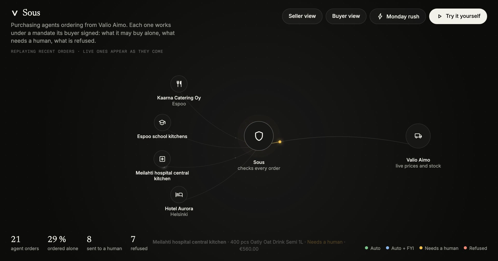

Junction 2026 · Valio Aimo, Trusted Trade Agents
Sous
Valio Aimo's front door for AI purchasing agents.
The agent carries the mandate. Valio Aimo enforces it. The customer stays in control.
sous.saarikko.dev
github.com/Zawaer/sous-gateway · MIT · team semi-tired finns
